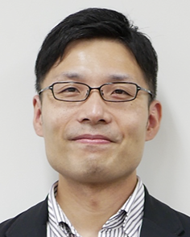

内山 彰
准教授 · English page
大阪大学 モバイルコンピューティング研究室にて、モバイルセンシング・コンピューティング、コンテキスト認識、ヘルスケアの研究に従事しています。
- メール
- uchiyama [AT] ist.osaka-u.ac.jp
- 電話
- +81-6-6879-4556
- FAX
- +81-6-6879-4559
- 住所
- 〒565-0871 大阪府吹田市山田丘1-5 大阪大学大学院情報科学研究科 モバイルコンピューティング研究室

About
2005年および2008年に大阪大学大学院情報科学研究科にて修士（情報科学）および博士（情報科学）を取得しました。 2007年4月から2009年3月まで日本学術振興会特別研究員（DC2/PD）を務め、その間にイリノイ大学アーバナ・シャンペーン校 訪問研究員も兼務しました。 2009年に大阪大学特任助教、2013年に助教、2021年より准教授に着任しています。
IEEE、IEEE Computer Society、ACM、電子情報通信学会（IEICE）、情報処理学会（IPSJ）の会員です。
主な研究分野は、モバイルセンシング・コンピューティング、コンテキスト認識、ヘルスケアです。
委員歴
編集・査読
- Guest Editor, Sensors and Materials（2025/9 – 現在）
- Reviewer, IEEE Transactions on Mobile Computing（2017/4 – 現在）
- Reviewer, IEEE Transactions on Communications（2019/11 – 現在）
- Reviewer, IEEE Transactions on Vehicular Technology（2019/10 – 現在）
- Reviewer, Elsevier Pervasive and Mobile Computing（2019/2 – 現在）
- Reviewer, ACM IMWUT（2017/5 – 現在）
- 編集委員, 情報処理学会論文誌（2019/4 – 2020/1）
学会・専門委員会
- 特集号担当, 情報処理学会 DPS 研究会（2026/2 – 現在）
- 専門委員, 電子情報通信学会 コミュニケーションシステム研究会（CS）（2024/7 – 現在）
- 専門委員, 電子情報通信学会 センサネットワークとモバイルインテリジェンス研究会（SeMI）（2023/7 – 現在）
- 運営委員, 情報処理学会 モバイルコンピューティングと新社会システム研究会（MBL）（2020/4 – 現在）
- 幹事, 情報処理学会 関西支部（2025/6 – 2027/5）
- 幹事, 電子情報通信学会 SeMI 研究会（2021/7 – 2023/6）
- 幹事補佐, 電子情報通信学会 SeMI 研究会（2019/4 – 2021/6）
- 幹事, 情報処理学会 MBL 研究会（2016/4 – 2020/3）
国際会議オーガナイズ・プログラム委員
- Program Committee, IEEE VTC-Fall 2026（2026/3 – 現在）
- Workshop Co-Chair, MobiQuitous 2026（2026/1 – 現在）
- Finance Chair, ICDCN 2026（2024/12 – 2026/4）
- TPC Chair, 第15回モバイルコンピューティング国際会議（ICMU 2026）（2024/10 – 2026/4）
- Publication Chair, International Symposium on Spatial and Temporal Data（SSTD）（2025/1 – 2026/3）
- Finance Chair, 27th International Conference on Distributed Computing and Networking（ICDCN）（2024/9 – 2026/1）
- Organizer, 2nd ACM SIGSPATIAL Workshop on Geo-Privacy（2024/5 – 2024/11）
- Poster Chair, ACM MobiSys 2024（2023/9 – 2024/6）
- Program Committee, 11th International Conference on the Internet of Things（2022）
- Program Committee, 10th International Conference on the Internet of Things（2021）
- Organizer, First International Workshop on Maintenance-Free Context Sensing（MFSens）（2020/7 – 2021/1）
- Finance Chair, 18th ACM SenSys（2019/11 – 2020/12）
- Finance Chair, 7th ACM BuildSys（2019/11 – 2020/12）
- Registration Chair, 情報処理学会 SIG-MBL ICMU（2016, 2017, 2019）
出典: researchmap